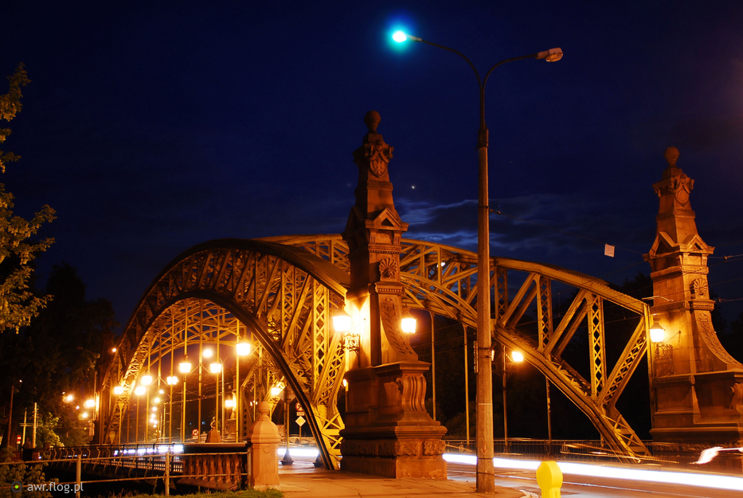

KONTAKT
Zarejestruj się!
A teraz cos o sobie!
Wrocław
- pokochaj nasze miasto
Wiadomości
|
Artykuły
|
Ogłoszenia
|
Sport
|
Sztuka
Piękne miejsca we Wrocławiu
Michael Jackson przyjeżdża do Wrocławia!
Wybudują nowe drogi rowerowe
Artykuł na inny temat
Wybudują nowe drogi rowerowe
Artykuł na jeszcze inny temat
Wybudują nowe drogi rowerowe
<Widok na katedrę>
<Ratusz>
<Widok na Most Zwierzyniecki>

Ogłoszenia
Sprzedam kotka
Kupię kotka
Zamienię telewizor na zmywarkę
Kupię ciągnik
Korepetycje z chińskiego
Dla studentow
Ściągnij książkę
Ściągnij przewodnik po Wrocławiu po angielsku
Znajdź pracę -->
P.R.A.C.A
Japoński noblista we Wrocławiu:
Komitet Noblowski opisał tegoroczną nagrodę z fizyki pięknym hasłem: „Za nowe światło, które rozświetliło świat”.
Nagrodę otrzymali:
Isamu Akasaki
Hiroshi Amano
Shuji Nakamura
Troje nowych profesorow belwederskich:
prof. Henryk Bujak (Uniwersytet Przyrodniczy)
prof. Grażyna Gościniak (Uniwersytet Medyczny)
prof. Dariusz Janczak (Uniwersytet Medyczny)
Koniec koncertów na Wyspie Słodowej